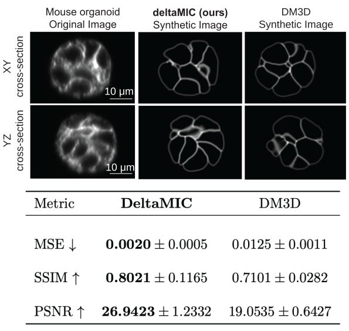

Inverse 3D Microscopy Rendering for Embryo Shape Inference with Active Mesh

- Sacha Ichbiah1
- Anshuman Sinha1,2
- Fabrice Delbary1
- Hervé Turlier1
1 Collège de France, CNRS, INSERM, PSL University
2 Université Paris Cité


Overview
deltaMic is a CUDA-based differentiable 3D renderer for fluorescence microscopy. It models image formation as a Fourier-space convolution between the microscope’s point-spread function (PSF) and a triangular mesh representation of the specimen. By jointly optimizing mesh geometry and optical parameters directly from raw images, deltaMic achieves robust 3D reconstruction without labeled training data or priors.

Figure 1 - deltaMic pipeline overview.
First Experiment Results
The following videos show the progression of deltaMic fitting simple initial meshes — spherical or toroidal — to match different target geometries in clean, artificial fluorescence images. These demonstrate the optimization's convergence from abstract shapes to realistic targets using synthetic data.
Microscopy Reconstruction Results (C. elegans)
The next set of experiments applies deltaMic to real microscopy data, showing its ability to fit fluorescent membrane images of C. elegans embryos at various developmental stages — 4-cell, 8-cell, and 16-cell stages — demonstrating accurate inference of multicellular morphology from real imaging data.
Results Across Species
deltaMic accurately reconstructs early-stage embryo morphologies across species and imaging modalities.

Figure 2 - Inferred cellular geometries for ascidian, mouse, and C. elegans embryos.
Benchmarking
To assess generality, deltaMic was compared against DM3D, a leading active-mesh segmentation framework implemented as a Fiji plug-in.

Figure 3 - Comparison between DM3D and deltaMic on 3D mouse organoid data.
deltaMic demonstrates improved reconstruction of multicellular membrane structures while maintaining photometric fidelity. Performance on nucleus-only datasets is limited due to design assumptions targeting multicellular surfaces.
Discussion
deltaMic bridges physics-based rendering and inverse modeling in biological imaging. This approach enables quantitative analysis of morphogenesis by linking observed fluorescence to underlying 3D geometry and optical parameters.
Current limitations
- Dependence on an adequate initial mesh
Ongoing directions
- Automated mesh initialization
- Temporal morphodynamic inference (tension, curvature, pressure)
- Integration with biophysical simulation pipelines
Citation
@InProceedings{deltamic_2025_ICCV,
author = {Sacha Ichbiah and Anshuman Sinha and Fabrice Delbary and Hervé Turlier},
title = {Inverse 3D Microscopy Rendering for Cell Shape Inference with Active Mesh},
booktitle = {Proceedings of the IEEE/CVF International Conference on Computer Vision (ICCV)},
month = {October},
year = {2025},
pages = {27466-27475}
}
© 2025 Anshuman Sinha | Last updated: Oct. 16, 2025